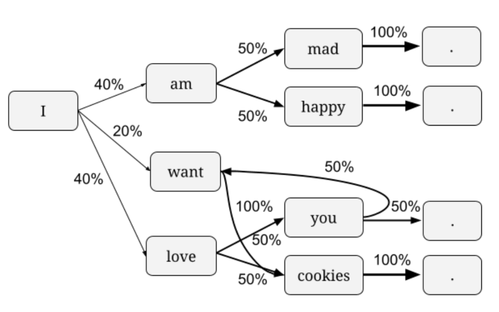
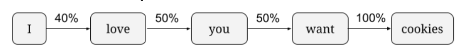

Author Name (xxx@xxx), Author Name (xxx@xxx)
Python string methods, dict mutation, random module.
In the Procedural Text Generator project, students generate new sentences using a Markov chain based on an online source text. This project is designed for introductory Python classes, with a specific focus on string manipulation and dict mutation.
Before starting code for the project, students are first introduced in lecture to Markov chains and the ways they can be used to model language. (See attachments for slides)
 In the first part of the project, students download text from the web and use a sequence of string methods to tokenize that text into sentences and words. Then students build the chain using a Python dict where each key is a word and the value is a list of words that may come after.
Finally, they write a loop that can generate sentences using the chain and randomization.
The assignment allows for students to bring self-expression into their work, since they can both select their source text and share their favorite generated sentences. Their code can still be automatically tested for correctness, however, so this project can be used in large classes.
Here are some outputs from student-made chains along with their source text.
"the poor guiltless of winding among the elements of the recollections"
"let us to judge only in our mind"
"“she’s embarrassed?” he said low in my memory that, though i discovered and scrubbing-brushes and a moment itself."
"the end of the glamour of silk stockings and _what do with yellow paper"
"the early bird is only partially true, it pours"
"it is perfect warmth it for jackets considering they continuously have come to sleep! comfortable inside and its pretty slim on cold months pockets are not too long for him another color is great however is really loves it"
This project assumes students are already comfortable with variables, user-defined functions, while/for loops, and lists.
We distributed the project as a Jupyter notebook and used doctests for grading the functions. However, it could also be delivered in a .py file and tested with other frameworks.
This project was used in an introductory Python class with adult learners. It would be appropriate for a CS1 in HS or college.
There are many possible variants for this project.
Those variants are not in assignment form yet, so you would need to prepare student facing versions of them, removing code and adding instructions like the assignment notebook.
Besides practicing string and dict syntax, this project helps students gain a deeper understanding of mutability versus return values, as some functions require returning new values by manipulating immutable (string) values while other functions should only mutate an argument and return nothing. That is one of the most common sources of confusion for students, though we reduced confusion through the addition of scaffolding exercises on dictionary mutation before the project.
This project demonstrates a compelling usage of the dict data structure. Programming a Markov chain requires the O(1) efficiency of data access in a dict, since sentence generation performs a dict access for each word in the sentence. I have attempted to port this project to languages that do not have hash map data structures, and the sentence generation runs too slowly to be practical. The instructor could demonstrate and time a list-based approach versus dict-based approach to make that efficiency difference quite obvious.
Building a basic procedural text generator using a Markov chain can be a gateway to discussing (and even implementing) other text generation techniques, like deep learning or syntax tree based approaches. It's also a gateway to discuss procedural generation generally, and its wide use in video games and 3D movies. For our class, I asked a game developer to give a guest lecture on how his game uses Markov chains and similar techniques to make an open world style game.
Before students can code a Markov chain, they must understand what it is, and that can become an obstacle for some students. To help students with that understanding, we kick-off the project with a lecture about Markov chains and a walk-through of a sample chain. Some students may benefit from additional explanations or visualizations, however. Relatedly, a student who has seen Markov chains in a previous class (such as a statistical techniques class) may have an unfair advantage over a student who has never seen them before.
This project encourages students to select their own source text (typically a Project Gutenberg book), which leads to more diversity in project output across the class but can also lead to disparity in sentence generation quality. Some source texts require much more processing than what's required by the project, and students may be disappointed in their generated sentences. The instructional staff can offer tips to those students who want to improve their text processing step.